HyperDEX-0.1.0-alpha.2-Enhancements
- Various user-interface improvements. Larger text in some places. Less scrollbars.
- Added the Denarius (DNR) currency.
- Denarius currency is now accessible on the Settings screen
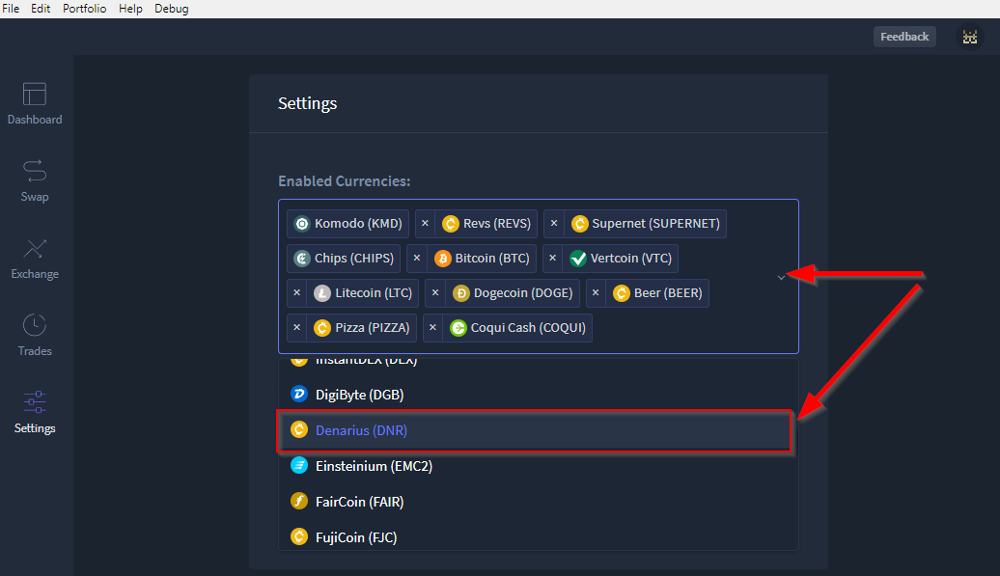
- Once added, it is now visible in the Dashboard.
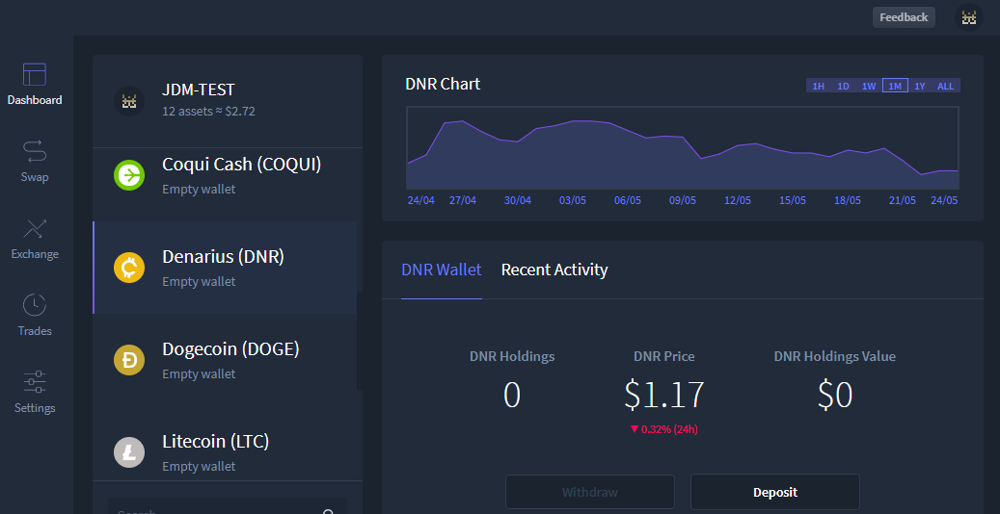
- Also when added, DNR is available for trading.
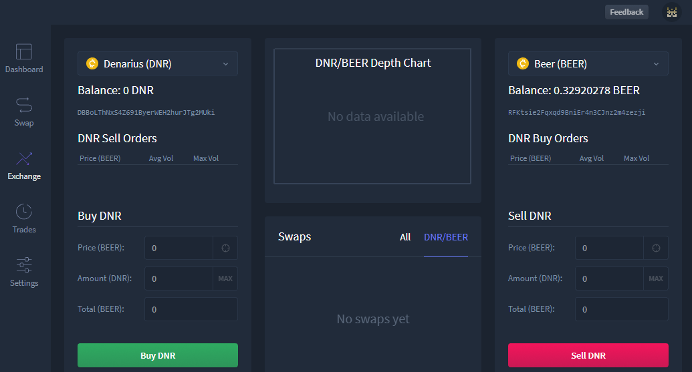
- Fixed the Electrum port for BTCH and CRYPTO. - Dev Only
- Fixed a problem with typing zero after a decimal point in input fields.
- User is now able to enter integers (original bug listed zeros only) in the buy/sell fields of the exchange.
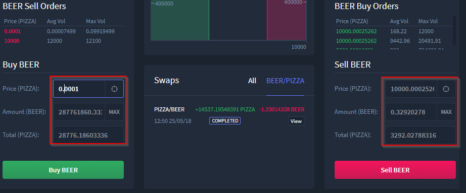
- The SnowGem currency ticker was incorrect and was changed from SNG to XSG. You need to enable it again if you had it enabled previously.
- SnowGem ticker updated to XSG in all relevant locations
- Settings
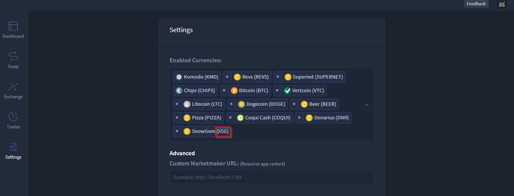
- Dashboard
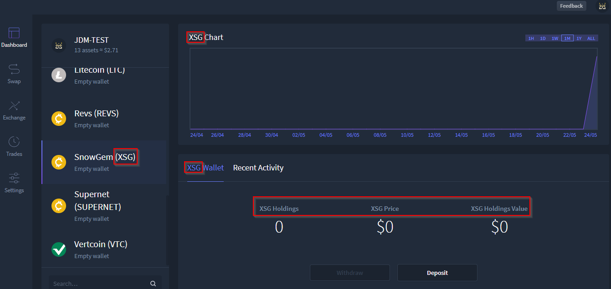
- Exchange
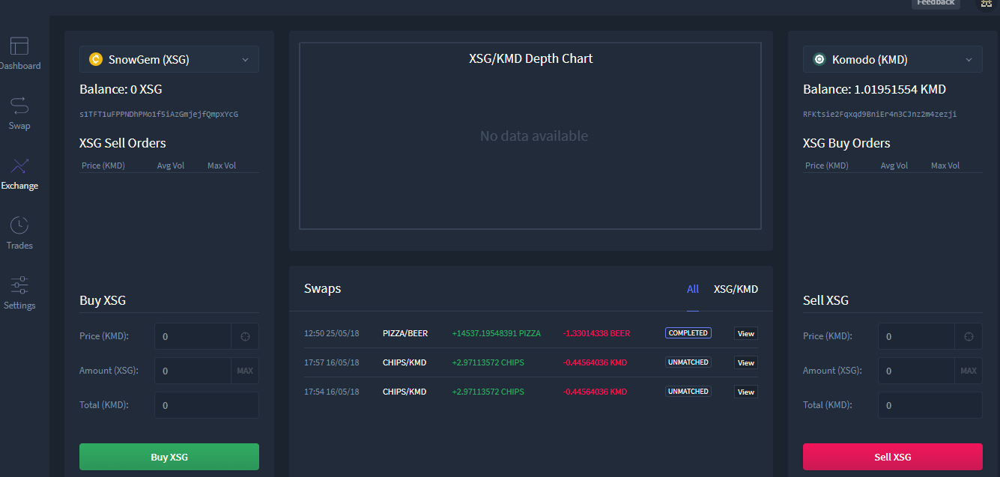
- The HODL and HODLC currencies are temporarily removed while we sort out some confusion.
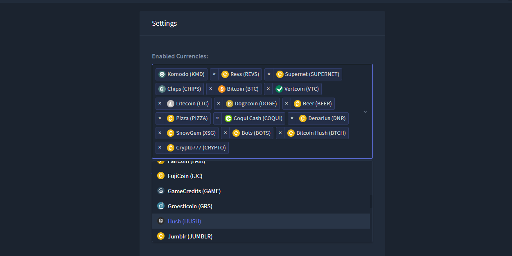
- "View" button is now shown in the "Open Orders" view too.
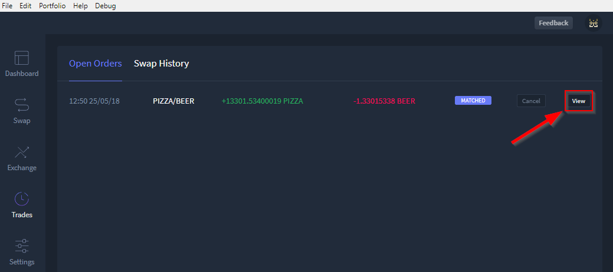
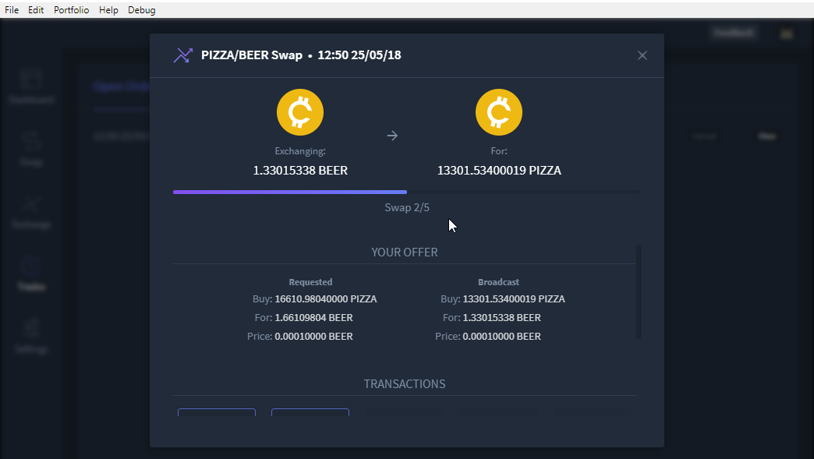
- Added a
Copy Swap Debug Data button to the swap modal dialog, so you can more easily share debug data with us.
- The
Copy Swap Debug Data button has been added to the swap dialog from the view button of the swap.
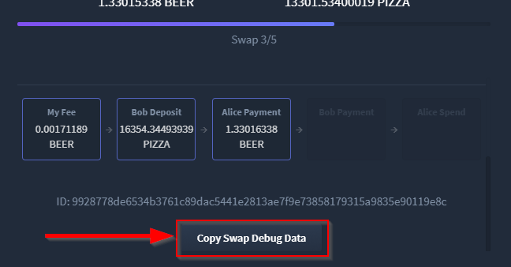
- Once copied, paste into desired location (in this example Notepad)
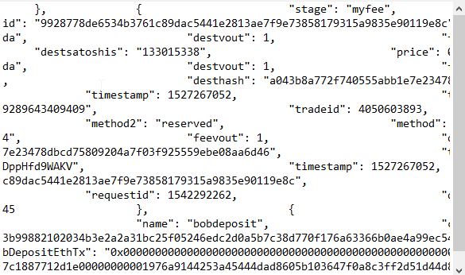
- PIZZA and BEER no longer show a price since they're just test currencies.
- BEER now shows $0 value
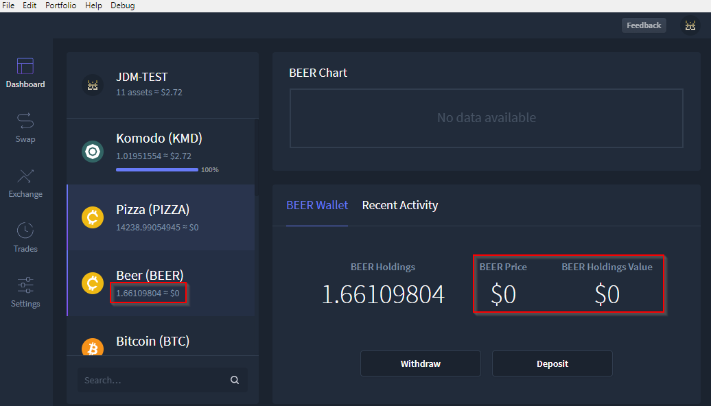
- PIZZA now shows $0 value
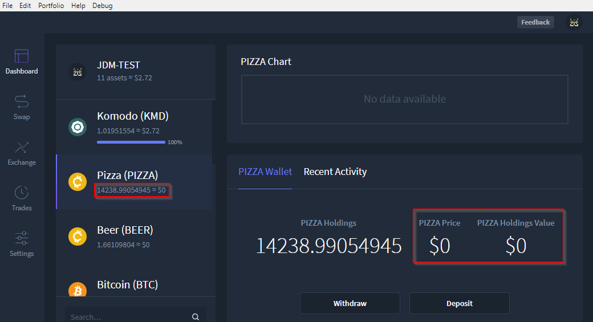